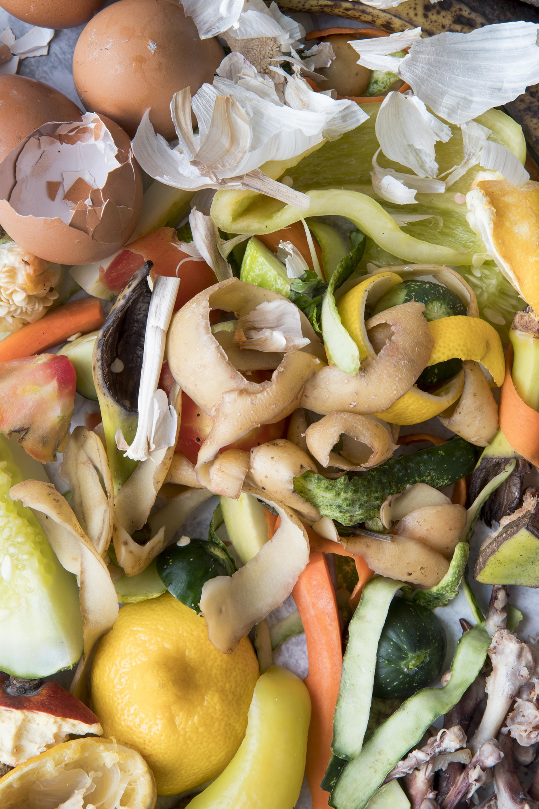

A nossa luta
A fome… uma palavra que remete a uma das principais
dificuldades que milhões de pessoas enfrentam todos
os dias, também é um dos principais desafios para as
diversas partes do mundo, sendo um dos Objetivos de
Desenvolvimento Sustentável (ODS) “Fome zero”.
Apesar de ser definida por números incontáveis, não
há palavras para descrever as marcas que ela deixa,
pensando desta forma buscamos criar chefs, que façam
a diferença, sendo as receitas apresentadas uma forma
de transimitir esperança.
Desafios enfrentados